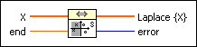
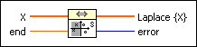
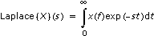
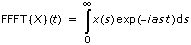
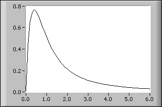

Laplace Transform Real VI
Owning Palette: Transforms VIs
Requires: Full Development System
Computes the real Laplace transform of the input sequence X.

 Add to the block diagram Add to the block diagram |
 Find on the palette Find on the palette |
Owning Palette: Transforms VIs
Requires: Full Development System
Computes the real Laplace transform of the input sequence X.

| Add to the block diagram |
Find on the palette |
 |
X is the array describing the evenly sampled time signal. The first element of this array belongs to t = 0, the last to t = end. |
 |
end is the instant in time of the last sample. The entire sample interval is between 0 and end. |
 |
Laplace {X} is the result of the Laplace transform as an array. |
 |
error returns any error or warning from the VI. You can wire error to the Error Cluster From Error Code VI to convert the error code or warning into an error cluster. |
The real Laplace transform of a real signal x(s) is defined by

for s  0 and s real.
0 and s real.
Here x(t) is defined for all: t 0.
The discrete version of the Laplace transform of a discretely and evenly-sampled signal is a generation of the above continuous version.
The definition of the Laplace transform is not of much use if the time signal increases rapidly with the time. The discrete version of the Laplace transform cannot fully detect the convergence behavior of the original definition.
The discrete version of the Laplace transform is computationally expensive. An efficient strategy for the discrete Laplace transform is based on the fast fractional Fourier transform (FFFT). The definition of the FFFT is

with an arbitrarily chosen complex α.
The following diagram shows the real Laplace transform of the function f(t) = sin(t) in the interval (0, 6). This is entered on the front panel as end 6.00 and X values of sin(t) for 0  t 6.
t 6.
